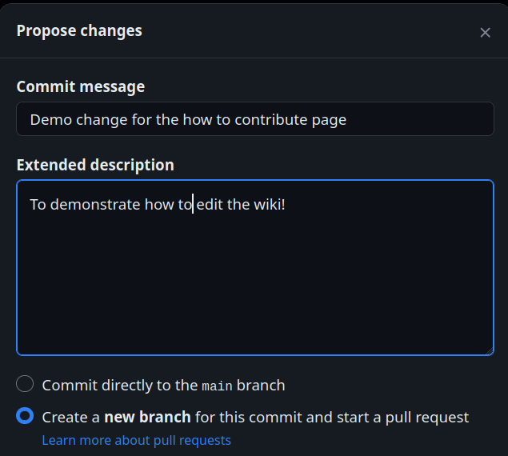

Third Party Emulation: Non-EmuDeck Tools and Resources
Learn how to install various tools and resources related to emulation on your Steam Deck outside of what EmuDeck installs. These tools and resources are either difficult to implement into EmuDeck's installation script directly, require elaborate setup, or may be added to EmuDeck in the future pending time and resources.
The guides on this page are not officially supported by EmuDeck. Many require some level of comfort in the terminal to successfully install. Regardless of your comfort with the terminal, the guides will cover as much detail as possible to address a wide variety of expertise levels. If you get stuck on a certain part, it is encouraged you Google and troubleshoot. The EmuDeck Discord will not be able to promise support for the guides available on this page.
Third Party Emulation Table of Contents
-
Decompilations and Reverse Engineered PC Ports
- Getting Started with Decompilations and Reverse Engineered PC Ports
- Games
- 2Ship2Harkinian: Majora's Mask
- Cannonball: OutRun Engine
- OpenGOAL: Jak and Dexter: The Precursor Legacy
- OpenGOAL: Jak II
- Perfect Dark
- Render96ex
- Ship of Harkinian: Ocarina of Time
- sm64ex
- sm64ex-coop
- Sonic 1 and 2
- Sonic CD
- Super Mario 64 Plus
- Super Mario Bros
- Super Mario Bros: The Lost Levels
- Super Mario World
- Super Metroid
- Super Metroid Redux
- zelda3: A Link to the Past
- Zelda64: Majora's Mask
- General Maintenance
Decompilations and Reverse Engineered PC Ports
Getting Started with Decompilations and Reverse Engineered PC Ports
How to Set up Distrobox
Many of the decompilations and reverse engineered PC ports must be compiled. Compiling on the Steam Deck can be a bit tricky. Distrobox is one solution to make compiling these easy to do and any changes made within a Distrobox are retained on SteamOS updates.
This section will go over setting up a Distrobox, which you will utilize throughout this page.
Prerequisites: Sudo Password
Note: Skip this section if you have already set a sudo password
- In Desktop Mode, open
Konsole, type inpasswd, and press enter - You'll be prompted to create a password. Your text will not be visible. After you press enter, you will need to type your password again to confirm
- Exit out of Konsole
How to Install Distrobox
Note: This section will require using sudo.
- In Desktop Mode, open Konsole and enter the following lines, one at a time
- Download a supported container manager. For most people, lilipod is more than enough and can be obtained by downloading
lilipod-linux-amd64from https://github.com/89luca89/lilipod/releases/latest- Alternatively, you can use podman if you need more than what lilipod offers
- Rename
lilipod-linux-amd64tolilipod. If using podman, renamepodman-launcher-amd64topodman- Casing and spelling are important
- Right click
lilipodorpodman, clickProperties, clickPermissions, and ensureIs executableis checked - Move the
lilipodorpodmanfile to/home/deck/.local/bin/~/.localis a hidden folder by default. In Dolphin (file manager), click the hamburger menu in the top right, click "view hidden files" to see these folders
How to Configure bashrc
Note
These instructions are for the default shell
If you are using another shell, replace .bashrc with the rc of your appropriate shell
- In Desktop Mode, open the
/home/deckfolder- You may not see the word
deckin the file path at the top, this is thehomefolder for thedeckuser
- You may not see the word
- Click the hamburger menu in the top right,
☰, clickShow Hidden Files - Right click
.bashrc, clickOpen with Kateor a file editor of your choice - Add these lines to the bottom of the
.bashrcfile
# Uncomment the xhost line below if you know that you are using xhost
#xhost +si:localuser:$USER
export PATH=$HOME/.local/bin:$PATH
- Save the
.bashrcfile and exit - If you had a terminal open previously (Konsole), close out of it and re-open before proceeding to the next section
How to Set Up Distrobox
The various sections on this page will assume you are using the Ubuntu distrobox created in the section below. However, if you prefer, you may also create a Debian distrobox (the commands will mostly be identical) or use a distro of your choice (you will need to figure out how to install the various dependencies).
- Open Konsole
- Create a Distrobox of a distro of your choice. In this example, we will use Ubuntu:
distrobox create --name ubuntu -i ubuntu:23.04--name ubuntuassigns a name to the distrobox, replaceubuntuwith your preferred name-i ubuntu:23:04selects a distro, replaceubuntu:23:04with your preferred distro- If you get multiple options after inputting this command, select the
docker.io/library/ubuntu:##.##image by pressing enter on the respective line
- To enter the Distrobox, open Konsole and enter:
distrobox enter ubuntu- This command enters the distrobox (assigned by name in Step 2), replace
ubuntuwith the name you typed in Step 2 - You will need to enter the Distrobox when compiling the various games on this page. You can identify when you are in a Distrobox by looking at the lefthand side of Konsole. Using the Distrobox created by this guide, it will say
deck@ubuntu
- This command enters the distrobox (assigned by name in Step 2), replace
Other Distros
You can see a list of all available distros compatible with Distrobox here
Terminal Tips and Tricks
cd- Change directories
- For example, if you are working in a folder in terminal and need to change to a subfolder, enter
cd subfoldername- You can press tab to auto-complete the sub-folder name as well
cd ..orcd -- Change into the previous directory
Tabbutton- Auto complete file and path names
lsorll- List all of the folders and files in the current directory
~can be used in place ofhome- For example, if you have a folder in your
Applicationsthat you would like to navigate to, you can usecd ~/Applicationsinstead of typingcd /home/deck/Applications
- For example, if you have a folder in your
mkdir- Create folders
- For example:
mkdir foldername
Ctrl+C- Terminate a running process
Uparrow key button- Repeat last used command
Ctrl+L- Clear the screen
Ctrl+U- Clear current input
Ctrl+A- Jump to beginning of the line
Games
2Ship2Harkinian: Majora's Mask
What is 2Ship2Harkinian?
An unofficial PC port of The Legend of Zelda Majora's Mask.
Source: https://github.com/HarbourMasters/2ship2harkinian
Supported Legend of Zelda: Majora's Mask ROMs
To check the hash of your ROM, right click the ROM, click Properties, click Checksums, click Calculate to the right of SHA1 and validate it matches one of the below hashes.
7f5630dbc4d5d61d6276213210c4d5cdd83a47d6d6133ace5afaa0882cf214cf88daba39e266c0789743aa026e9269b339eb0e3044cd5830a440c1fd
Setting up 2Ship2Harkinian
Note: The following folder locations are recommendations. You can choose a different folder location.
- In
/home/deck/Applications, create a2Ship2Harkinianfolder - Download the latest
Linuxversion of2Ship2Harkinian: https://github.com/HarbourMasters/2ship2harkinian/releases to the folder you created in Step 1- Download the
2Ship-VERSION-NAME-Linux.zipfile
- Download the
- Right click
2Ship-VERSION-NAME-Linux.zipand clickExtract > Extract archive here- If it creates a subfolder, move the contents directly to
/home/deck/Applications/2Ship2Harkinian
- If it creates a subfolder, move the contents directly to
- Right click
2ship.appimage, clickProperties, clickPermissions, checkIs Executable
Installing 2Ship2Harkinian
- Place your
The Legend of Zelda: Majora's MaskROM in/home/deck/Applications/2Ship2Harkinian - Open
2ship.AppImage, wait for it to finish generating the OTR - To play 2Ship2Harkinian, open
2ship.AppImage
How to Install Custom Textures and Mods
Texture Pack and Mod Sources
This list is not exhaustive
How to Install Custom Textures and Mods
- In
/home/deck/Applications/2Ship2Harkinian, create amodsfolder if one does not exist already- Casing matters
- Place your mods or textures directly into this folder. Mods or textures typically have a
.otrfile extension- If you have a
.raror.zipfile, you will need to extract it first
- If you have a
- Depending on the mod or texture pack, you may need to enable it in game as well. Refer to the mod or texture pack for any additional instructions
2Ship2Harkinian Save Location
Saves for 2Ship2Harkinian are in the same folder as the 2ship.AppImage. If you followed this section, your saves will be in /home/deck/Applications/2Ship2Harkinian.
How to Transfer Zelda64: Majora's Mask Saves to 2Ship2Harkinian
If you have a save you would like to transfer from Zelda64: Majora's Mask, open 2Ship2Harkinian in Desktop Mode. Drag the save from Zelda64 to the open 2Ship2Harkinian window.
For the save locations, see Zelda64: Save Location
Cannonball: OutRun Engine
How to Build Cannonball on the Steam Deck
What is this?
CannonBall is a souped-up game engine for the OutRun arcade game.
Source: https://github.com/djyt/cannonball
Installing Prerequisites
- To do the steps in this section, you will need to have created an Ubuntu Distrobox. If you have not created one already, see How to Set up Distrobox for instructions
- Enter the Distrobox by opening Konsole and entering:
distrobox enter ubuntu
- Enter the following:
sudo apt install -y sdl2-dev libboost-dev cmake make
Setting Up Cannonball
Note: The following folder locations are recommendations. You may choose a different folder location.
- In
/home/deck/Applications, create aDistroboxfolder - In the
Distroboxfolder, right click anywhere in the folder, clickOpen Terminal Here, enter:git clone --recursive https://github.com/djyt/cannonball.git
- A
cannonballfolder will be created, ` - You will add your ROM files will be added after the build is finished
Building Cannonball
- In
/home/deck/Applications/Distrobox/cannonball, right click anywhere in the folder, clickOpen Terminal Here, enter:distrobox enter ubuntu
- Enter:
mkdir buildmkdir romscd buildcmake --fresh -DTARGET=linux.cmake -DOpenGL_GL_PREFERENCE=GLVND -DCMAKE_BUILD_TYPE="Release" -S ../cmake/make -j4 VERBOSE=1
- Wait for it to finish building
Providing ROM Files for Super Cannonball
You must provide particular versions of the OutRun ROM files to run Cannonball. OutRun Revision B Roms need to unpacked into the cannonball/build/roms folder. The cannonball/roms/roms.txt file lists the expected file names to help you check that you have unpacked the correct files.
The location of suitable files cannot be linked here because they are copyright. When you have a suitable archive unpack it so that the files are directly in cannonball/build/roms and not in any subdirectory.
How to Configure Cannonball
See the Cannonball manual:
https://github.com/djyt/cannonball/wiki/Cannonball-Manual
No particular reconfiguration is needed for the Steam Deck. The game will default to 16:9 widescreen, and has no 16:10 mode, so there will be small black bars at the top and bottom of the SteamDeck screen. Options can be changed inside the Cannonball UI.
How to Run Cannonball
cd ~/Applications/distrobox/cannonball/build./cannonball
OpenGOAL: Jak and Dexter: The Precursor Legacy
What is OpenGOAL: Jak and Dexter: The Precursor Legacy?
OpenGOAL is an unofficial port of Jak and Daxter: The Precursor Legacy for Windows and Linux.
Source: https://opengoal.dev/
Setting up OpenGOAL
Note: The following folder locations are recommendations. You may choose a different folder location.
- In
/home/deck/Applications, create anOpenGOALfolder - Place your
Jak and Dexter: The Precursor LegacyISO directly in the newly createdOpenGOALfolder - Download the latest
amd64.AppImagefrom here: https://github.com/open-goal/launcher/releases/latest and place it in the folder you created in Step 1- Example: Download
open-goal-launcher_#.#.#_amd64.AppImage- The version number may be different depending on when you are reading this
- Example: Download
- Right click
open-goal-launcher_#.#.#_amd64.AppImage, clickProperties, clickPermissions, checkIs Executable
Installing OpenGOAL
- In
/home/deck/Applications/OpenGOAL, double clickopen-goal-launcher_#.#.#_amd64.AppImageto open it - Click
Set Version, click theDownloadicon on the row with the latest version at the top - Click the circle icon on the left to select the version and click
Savein the top right - On the left side, select
Jak and Dexter - On the bottom right, click
Install via ISOand select yourJak and Dexter: The Precursor LegacyISO - The application will begin to decompile your game, this may take a few moments
- Once it is finished decompiling, press
Continue - To play your game, open this launcher, select
Jak and Dexteron the left, and clickPlayin the bottom right- The launcher does not work in Game Mode. See How to Add OpenGOAL: Jak and Dexter: The Precursor Legacy to Steam to learn how to play the game directly in Steam
How to Install Custom Textures
Note: Texture packs need to be zipped in order to be installed from the launcher. This section will use texture_replacements.zip from https://www.youtube.com/watch?v=lX1gBO1INZ4 as an example.
- Download the custom textures from the pinned comment on this Youtube Video: https://www.youtube.com/watch?v=lX1gBO1INZ4 to
/home/deck/Applications/OpenGOAL - Double click
open-goal-launcher_#.#.#_amd64.AppImageto open it - On the left side, select
Jak and Dexter - On the bottom right, select
Features,Texture Packs - Click
Add New Pack - Select
texture_replacements.zipand wait a few moments - Your texture pack will appear below in its own box. Click the red
Disabledbutton to enable your texture pack - Click
Apply Texture Changesin the top right and wait a few moments - Your custom textures will now be installed
How to Add OpenGOAL: Jak and Dexter: The Precursor Legacy to Steam
- In
/home/deck/Applications/OpenGOAL, right click anywhere in the blank space, clickCreate New>Text File - Name it
Jak and Dexter: The Precursor Legacy.sh - At the top of the text file, write
#!/bin/bash - In
/home/deck/Applications/OpenGOAL, double clickopen-goal-launcher_#.#.#_amd64.AppImageto open it - On the left side, select
Jak and Dexter - On the bottom right, click the
Gearicon, and clickCopy Game Executable Command - In the text file you created in Step 1, right click anywhere below
#!/bin/bashand clickPaste - Save the text file and exit out
- Right click your newly created text file, click
Properties, clickPermissions, checkIs Executable - Right click the text file, click
Add to Steam- If you are using EmulationStation-DE or Steam ROM Manager, place in
Emulation/roms/desktopinstead- See How to Add Decompilations and Reverse Engineered PC Ports to Steam for further detail
- If you are using EmulationStation-DE or Steam ROM Manager, place in
Your text file should look similar to the text below:
Text file name:
Jak and Dexter: The Precursor Legacy.sh
Text file contents:
#!/bin/bash
/home/deck/Applications/OpenGOAL/versions/official/v0.2.0/gk -v --proj-path /home/deck/Applications/OpenGOAL/active/jak1/data --game jak1 -- -boot -fakeiso
Note: You will need to update this shortcut whenever you update OpenGOAL.
OpenGOAL: Jak II
Preface
The folders in this section will be repeated from OpenGOAL: Jak and Dexter: The Precursor Legacy. If you have already installed Jak and Dexter: The Precursor Legacy, you may use the same folders and launcher to install Jak II.
What is OpenGOAL: Jak II?
OpenGOAL is an unofficial port of Jak II for Windows and Linux.
Source: https://opengoal.dev/
Setting up OpenGOAL
Note: The following folder locations are recommendations. You may choose a different folder location.
- In
/home/deck/Applications, create anOpenGOALfolder - Place your
Jak IIISO directly in the newly createdOpenGOALfolder - Download the latest
amd64.AppImagefrom here: https://github.com/open-goal/launcher/releases/latest and place it in the folder you created in Step 1- Example: Download
open-goal-launcher_#.#.#_amd64.AppImage- The version number may be different depending on when you are reading this
- Example: Download
- Right click
open-goal-launcher_#.#.#_amd64.AppImage, clickProperties, clickPermissions, checkIs Executable
Installing OpenGOAL
If you already installed OpenGOAL: Jak and Dexter: The Precursor Legacy, you do not need to do Steps 2 and 3 again.
- In
/home/deck/Applications/OpenGOAL, double clickopen-goal-launcher_#.#.#_amd64.AppImageto open it - Click
Set Version, click theDownloadicon on the row with the latest version at the top - Click the circle icon on the left to select the version and click
Savein the top right - On the left side, select
Jak II - On the bottom right, click
Install via ISOand select yourJak IIISO - The application will begin to decompile your game, this may take a few moments
- Once it is finished decompiling, press
Continue - To play your game, open this launcher, select
Jak IIon the left, and clickPlayin the bottom right- The launcher does not work in Game Mode. See How to Add OpenGOAL: Jak II to Steam to learn how to play the game directly in Steam
How to Install Custom Textures
Note: Texture packs need to be zipped in order to be installed from the launcher.
- Download a texture pack of your choice
- Double click
open-goal-launcher_#.#.#_amd64.AppImageto open it - On the left side, select
Jak II - On the bottom right, select
Features,Texture Packs - Click
Add New Pack - Select your zipped texture pack and wait a few moments
- Your texture pack will appear below in its own box. Click the red
Disabledbutton to enable your texture pack - Click
Apply Texture Changesin the top right and wait a few moments - Your custom textures will now be installed
How to Add OpenGOAL: Jak II to Steam
- In
/home/deck/Applications/OpenGOAL, right click anywhere in the blank space, clickCreate New>Text File - Name it
Jak II.sh - At the top of the text file, write
#!/bin/bash - In
/home/deck/Applications/OpenGOAL, double clickopen-goal-launcher_#.#.#_amd64.AppImageto open it - On the left side, select
Jak II - On the bottom right, click the
Gearicon, and clickCopy Game Executable Command - In the text file you created in Step 1, right click anywhere below
#!/bin/bashand clickPaste - Save the text file and exit out
- Right click your newly created text file, click
Properties, clickPermissions, checkIs Executable - Right click the text file, click
Add to Steam- If you are using EmulationStation-DE or Steam ROM Manager, place in
Emulation/roms/desktopinstead- See How to Add Decompilations and Reverse Engineered PC Ports to Steam for further detail
- If you are using EmulationStation-DE or Steam ROM Manager, place in
Your text file should look similar to the text below:
Text file name:
Jak II.sh
Text file contents:
#!/bin/bash
/home/deck/Applications/OpenGOAL/versions/official/v0.2.0/gk -v --proj-path /home/deck/Applications/OpenGOAL/active/jak2/data --game jak2 -- -boot -fakeiso
Note: You will need to update this shortcut whenever you update OpenGOAL.
Perfect Dark
What is This Decompilation?
A work-in-progress port of the Perfect Dark decompilation to modern platforms.
Source: https://github.com/fgsfdsfgs/perfect_dark
Installing Prerequisites
- To do the steps in this section, you will need to have created an Ubuntu Distrobox. If you have not created one already, see How to Set up Distrobox for instructions
- Enter the Distrobox by opening Konsole and entering:
distrobox enter ubuntu
- Enter the following, one line at a time:
sudo dpkg --add-architecture i386sudo apt-get update
- Enter the following command:
sudo apt-get install git gcc g++ gcc-multilib g++-multilib make libsdl2-dev zlib1g-dev libsdl2-dev:i386 zlib1g-dev:i386
Setting Up Perfect Dark
Note: The following folder locations are recommendations. You may choose a different folder location.
- Download the
i686-linuxversion from https://github.com/fgsfdsfgs/perfect_dark#download to yourDownloadsfolder - Right click
pd-i686-linux.zip, clickExtract archive here, autodetect subfolder - Move the newly extracted
pd-i686-linuxfolder to/home/deck/Applications - Right click
pd - Click
Properties - Click
Permissions - Check
Is Executable - Place your
Perfect DarkROM in/home/deck/Applications/pd-i686-linux/data- MD5 Hash:
e03b088b6ac9e0080440efed07c1e40f - To locate your MD5 Hash, right click your ROM, click
Properties, clickChecksums, clickCalculateto the left ofMD5and compare it to the above hash. If it is a match, you have a valid ROM 5
- MD5 Hash:
- In order to properly launch Perfect Dark, proceed to the next section
How to Launch Perfect Dark
- Download attached
.shfile- PerfectDark.sh
- Note: If you are using different folder locations, make sure to edit the above file and edit the paths
- Place in
/home/deck/Applications- If you are using EmulationStation-DE or Steam ROM Manager, place in
Emulation/roms/desktopinstead- See How to Add Decompilations and Reverse Engineered PC Ports to Steam for instructions
- If you are using EmulationStation-DE or Steam ROM Manager, place in
- Right click
PerfectDark.sh - Click
Properties - Click
Permissions - Check
Is Executable - Use
PerfectDark.shto open Perfect Dark
How to Configure Perfect Dark
- Open
PerfectDark.shat least once so it can generate thepd.inifile - Open the
/home/deck/.local/share/perfectdark/folder~/.localis a hidden folder by default. In Dolphin (file manager), click the hamburger menu in the top right, clickShow Hidden Filesto see these folders
- Right click
pd.ini, clickOpen with Kateor a text editor of your choice - Customize settings
Recommended Settings
- Set
DefaultWidthto800 - Set
DefaultHeightto1200 - Set
DefaultFullscreento1
Controls
https://github.com/fgsfdsfgs/perfect_dark#controls
Render96ex
How to Compile Render96ex on the Steam Deck
What is Render96ex?
An "HD" version of Super Mario 64 based on the rendered advertisements and art published in Nintendo Power.
Source: https://github.com/Render96/Render96ex/wiki
When you include the HD textures as part of this guide the whole Render96ex install will need 1.1GB of storage. This compares to less than 0.1 GB for the SM64Plus version of the game.
Installing Prerequisites
- To do the steps in this section, you will need to have created an Ubuntu Distrobox. If you have not created one already, see How to Set up Distrobox for instructions
- Enter the Distrobox by opening Konsole and entering:
distrobox enter ubuntu
- Enter the following:
sudo apt install -y git build-essential pkg-config libusb-1.0-0-dev libsdl2-dev bsdmainutils libglew-dev
Setting Up Render96ex
Note: The following folder locations are recommendations. You may choose a different folder location.
- In
/home/deck/Applications, create aDistroboxfolder - In the
Distroboxfolder, right click anywhere in the folder, clickOpen Terminal Here, enter:git clone --single-branch --branch alpha https://github.com/Render96/Render96ex.git
- A
Render96exfolder will be created, place your Super Mario 64 ROM in this folder - Rename the Super Mario 64 ROM to
baserom.us.z64
Building Render96ex
- In
/home/deck/Applications/Distrobox/Render96ex/, right click anywhere in the folder, clickOpen Terminal Here, enter:distrobox enter ubuntu
- Enter:
make -j4 TEXTURE_FIX=1
- Wait for it to finish building
- To play Render96ex, open
sm64.us.f3dex2ein/home/deck/Applications/Distrobox/Render96ex/build/us_pc
How to Install Custom Models
- Download the latest model pack: https://github.com/Render96/ModelPack/releases to
/home/deck/Downloads - Right click
Render96_DynOs_v3.2.7zand clickExtract archive here, autodetect subfolder - Move the newly extracted
Render96_DynOs...folder to/home/deck/Applications/Distrobox/Render96ex/build/us_pc/dynos/packs - To enable custom models, in game, press
Start, pressL2, selectModel Packsand enableRender96DynOs...
How to Install Custom Textures
- In
/home/deck/Applications/Distrobox/Render96ex/build/us_pc/res, right click anywhere in the folder, clickOpen Terminal Here, enter:git clone https://github.com/pokeheadroom/RENDER96-HD-TEXTURE-PACK.git -b master
- The
RENDER96-HD-TEXTURE-PACKis now installed
How to Configure Render96ex
GUI
- While in game, press
Start, pressR1 - Configure settings
Config File
- Open
sm64.us.f3dex2ein/home/deck/Applications/Distrobox/Render96ex/build/us_pcat least once so it can generate thesm64config.txtfile - Open the
/home/deck/.local/share/sm64ex/folder~/.localis a hidden folder by default. In Dolphin (file manager), click the hamburger menu in the top right, clickShow Hidden Filesto see these folders
- Right click
sm64config.txt, clickOpen with Kateor a text editor of your choice - Customize settings
Ship of Harkinian: Ocarina of Time
What is Ship of Harkinian?
An unofficial PC port of The Legend of Zelda Ocarina of Time.
Source: https://www.shipofharkinian.com/
Supported Legend of Zelda: Ocarina of Time ROMs
For a full list of supported ROMs and a ROM validation tool, see https://ship.equipment/.
To confirm that you have a valid ROM, drag and drop your ROM to the website above.
Setting up Ship of Harkinian
Note: The following folder locations are recommendations. You can choose a different folder location.
- In
/home/deck/Applications, create aShipofHarkinianfolder - Download the latest
Linux-Performanceversion ofShip of Harkinian: https://github.com/HarbourMasters/Shipwright/releases to the folder you created in Step 1- Download the
SoH-VERSION-NAME-Linux-Performance.zipfile
- Download the
- Right click the downloaded zip file and click
Extract archive here, detect subfolder - Move the
soh.AppImageto/home/deck/Applications/ShipofHarkinian - Right click
soh.AppImage, clickProperties, clickPermissions, checkIs Executable
Installing Ship of Harkinian
- Place your
The Legend of Zelda: Ocarina of TimeROM in/home/deck/Applications/ShipofHarkinian - Open
soh.AppImage, wait for it to finish generating the OTR - To play Ship of Harkinian, open
soh.AppImage
How to Install Custom Textures and Mods
Texture Pack and Mod Sources
This list is not exhaustive
How to Install Custom Textures and Mods
- In your Ship of Harkinian folder, create a
modsfolder, all lowercase/home/deck/Applications/ShipofHarkinianif you used the folders in the above guide- Casing matters
- Place your mods or textures directly into this folder. Mods or textures typically have a
.otrfile extension- If you have a
.raror.zipfile, you will need to extract it first
- If you have a
- Depending on the mod or texture pack, you may need to enable it in game as well. Refer to the mod or texture pack for any additional instructions
Ship of Harkinian Save Location
Saves for Ship of Harkinian are in the same folder as the soh.AppImage. If you followed this section, your saves will be in /home/deck/Applications/ShipofHarkinian.
sm64ex
What is This Decompilation?
A fork of sm64-port/sm64-port with additional features.
Source: https://github.com/sm64pc/sm64ex
Installing Prerequisites
- To do the steps in this section, you will need to have created an Ubuntu Distrobox. If you have not created one already, see How to Set up Distrobox for instructions
- Enter the Distrobox by opening Konsole and entering:
distrobox enter ubuntu
- Enter the following:
sudo apt install build-essential git python3 libglew-dev libsdl2-dev bsdmainutils patch
Setting Up sm64ex
- In
/home/deck/Applications, create aDistroboxfolder - In the
Distroboxfolder, right click anywhere in the folder, clickOpen Terminal Here, enter:git clone https://github.com/sm64pc/sm64ex
- A
sm64exfolder will be created, place your Super Mario 64 ROM in this folder - Rename the Super Mario 64 ROM to
baserom.us.z64
Building sm64ex
- In the
sm64exfolder, right click anywhere in the folder, clickOpen Terminal Here, enter:distrobox enter ubuntu
- Enter:
make
- Wait for it to finish building
- To play
sm64ex, opensm64.us.f3dex2ein/home/deck/Applications/Distrobox/sm64ex/build/us_pc
How to Configure sm64ex
- Open
sm64.us.f3dex2ein/home/deck/Applications/Distrobox/sm64ex/build/us_pcat least once so it can generate thesm64config.txtfile - Open the
/home/deck/.local/share/sm64ex/folder~/.localis a hidden folder by default. In Dolphin (file manager), click the hamburger menu in the top right, clickShow Hidden Filesto see these folders
- Right click
sm64config.txt, clickOpen with Kateor a text editor of your choice - Customize settings
How to Apply Patches
A 60 FPS patch is included with the GitHub repo for sm64ex. However, you can take what's written here and apply additional patches to sm64ex.
- In the
/home/deck/Applications/Distrobox/sm64ex/enhancementsfolder, right click anywhere in the folder, clickOpen Terminal Here - Enter:
git apply 60fps_ex.patch --ignore-whitespace --reject60fps_ex.patchis the name of the included file. If the file name is different, replace the file name in the above command
- You will need to re-build sm64ex for the patches to apply. To do so, enter the Ubuntu Distrobox and run
make cleanin the`/home/deck/Applications/Distrobox/sm64exfolder
sm64ex-coop
What is This Decompilation?
Online multiplayer mod for SM64 that synchronizes all entities and every level for multiple players. Fork of sm64pc/sm64ex.
Source: https://github.com/djoslin0/sm64ex-coop
Installing Prerequisites
- To do the steps in this section, you will need to have created an Ubuntu Distrobox. If you have not created one already, see How to Set up Distrobox for instructions
- Enter the Distrobox by opening Konsole and entering:
distrobox enter ubuntu
- Enter the following:
sudo apt install build-essential git python3 libglew-dev libsdl2-dev libz-dev bsdmainutils
Setting Up sm64ex-coop
- In
/home/deck/Applications, create aDistroboxfolder - In the
Distroboxfolder, right click anywhere in the folder, clickOpen Terminal Here, enter:git clone https://github.com/djoslin0/sm64ex-coop.git
- A
sm64ex-coopfolder will be created, place your Super Mario 64 ROM in this folder - Rename the Super Mario 64 ROM to
baserom.us.z64
Building sm64ex-coop
- In the
sm64ex-coopfolder, right click anywhere in the folder, clickOpen Terminal Here, enter:distrobox enter ubuntu
- Enter:
make -j4
- Wait for it to finish building
- To play
sm64ex-coop, opensm64.us.f3dex2ein/home/deck/Applications/Distrobox/sm64ex-coop/build/us_pc
How to Configure sm64ex-coop
- Open
sm64.us.f3dex2ein/home/deck/Applications/Distrobox/sm64ex-coop/build/us_pc - On the main menu, click
Options
How to Play Multiplayer
See https://github.com/djoslin0/sm64ex-coop/wiki/Hosting-and-Joining.
Sonic 1 and 2
Preface
To compile Sonic 1 and 2, you will need a legally obtained copy of a Data.rsdk file, obtained either from the Sonic 1 and 2 versions on the Android or iOS versions. For instructions, see Android and iOS.
What is This Decompilation?
A complete decompilation of Retro Engine v4 and the menus from Sonic 1 and 2 (2013).
Source: https://github.com/Rubberduckycooly/Sonic-1-2-2013-Decompilation
Installing Prerequisites
- To do the steps in this section, you will need to have created an Ubuntu Distrobox. If you have not created one already, see How to Set up Distrobox for instructions
- Enter the Distrobox by opening Konsole and entering:
distrobox enter ubuntu
- Enter the following:
sudo apt install build-essential git libsdl2-dev libvorbis-dev libogg-dev libglew-dev libdecor-0-dev
Setting Up Sonic 1 and 2
- In
/home/deck/Applications, create aDistroboxfolder - In the
Distroboxfolder, right click anywhere in the folder, clickOpen Terminal Here, enter:git clone --recursive https://github.com/Rubberduckycooly/Sonic-1-2-2013-Decompilation.git
- A
Sonic-1-2-2013-Decompilationfolder will be created
Building Sonic 1 and 2
- In the
Sonic-1-2-2013-Decompilationfolder, right click anywhere in the folder, clickOpen Terminal Here, enter:distrobox enter ubuntu
- Enter:
make -j5
- In the
Sonic-1-2-2013-Decompilation, abinfolder will be created - If you would like to play both Sonic 1 and 2, make a copy of the
binfolder directly in theSonic-1-2-2013-Decompilationfolder - Rename the original
binand the copied folder to Sonic 1 and Sonic 2 respectively- This step is for easier folder management, it is a recommendation and not a requirement
- Place the matching
Data.rsdkin each folder - To play Sonic 1 and 2, open
RSDKv4
How to Configure Sonic 1 and 2
- In the respective Sonic 1 and 2 folder, after launching
RSDKv4for the first time, asettings.iniwill be created - Right click
settings.ini, clickOpen with Kateor a text editor of your choice - Customize settings
How to Mod Sonic 1 and 2
Mod Resources
This list is not comprehensive
- In the respective
Sonic 1orSonic 2folders, create amodfolder - Download and extract mod(s) to the
modfolder- A mod folder should typically have a
Datafolder and amod.inifile
- A mod folder should typically have a
- Right click
settings.ini, clickOpen with Kateor a text editor of your choice - Change
DevMenu=falsetoDevMenu=trueand save and close out of the file - While in game, press
Startand you should see a list of your mod(s) - To activate/toggle a mod, press
Aon the respective mod
Sonic CD
Preface
To compile Sonic CD, you will need a legally obtained copy of a Data.rsdk file, obtained either from the Sonic CD versions on the Android or iOS versions. For instructions, see Android and iOS.
What is This Decompilation?
A complete decompilation of Retro Engine v3/Sonic CD.
Source: https://github.com/Rubberduckycooly/Sonic-CD-11-Decompilation
Installing Prerequisites
- To do the steps in this section, you will need to have created an Ubuntu Distrobox. If you have not created one already, see How to Set up Distrobox for instructions
- Enter the Distrobox by opening Konsole and entering:
distrobox enter ubuntu
- Enter the following command:
sudo apt install build-essential git libsdl2-dev libvorbis-dev libogg-dev libtheora-dev libglew-dev
Setting Up Sonic CD
- In
/home/deck/Applications, create aDistroboxfolder - In the
Distroboxfolder, right click anywhere in the folder, clickOpen Terminal Here, enter:git clone --recursive https://github.com/Rubberduckycooly/Sonic-CD-11-Decompilation.git
- A
Sonic-CD-11-Decompilationfolder will be created
Building Sonic CD
- In the
Sonic-CD-11-Decompilationfolder, right click anywhere in the folder, clickOpen Terminal Here, enter:distrobox enter ubuntu
- Enter:
make CXXFLAGS=-O2 -j5
- In the
Sonic-CD-11-Decompilation, abinfolder will be created - Place the
Data.rsdkyou retrieved from How to Compile Sonic CD on the Steam Deck directly into thebinfolder - To play Sonic CD, open
RSDKv4
How to Configure Sonic CD
- In the
bin, after launchingRSDKv4for the first time, asettings.iniwill be created - Right click
settings.ini, clickOpen with Kateor a text editor of your choice - Customize settings
How to Mod Sonic CD
Mod Resources
This list is not comprehensive
- In the
binfolders, create amodfolder - Download and extract mod(s) to the
modfolder- A mod folder should typically have a
Datafolder and amod.inifile
- A mod folder should typically have a
- Right click
settings.ini, clickOpen with Kateor a text editor of your choice - Change
DevMenu=falsetoDevMenu=trueand save and close out of the file - While in game, press
Startand you should see a list of your mod(s) - To activate/toggle a mod, press
Aon the respective mod
Super Mario 64 Plus
How to Compile Super Mario 64 Plus on the Steam Deck
What is Super Mario 64 Plus?
SM64Plus is a fork of sm64-port that focuses on customizability and aims to add features that not only fix some of the issues found in the base game but also enhance the gameplay overall with extra options.
Source: https://github.com/MorsGames/sm64plus
Installing Prerequisites
- To do the steps in this section, you will need to have created an Ubuntu Distrobox. If you have not created one already, see How to Set up Distrobox for instructions
- Enter the Distrobox by opening Konsole and entering:
distrobox enter ubuntu
- Enter the following command:
sudo apt install -y git build-essential pkg-config libusb-1.0-0-dev libsdl2-dev bsdmainutils
Setting Up Super Mario 64 Plus
Note: The following folder locations are recommendations. You may choose a different folder location.
- In
/home/deck/Applications, create aDistroboxfolder - In the
Distroboxfolder, right click anywhere in the folder, clickOpen Terminal Here, enter:git clone https://github.com/MorsGames/sm64plus
- A
sm64plusfolder will be created, place your Super Mario 64 ROM in this folder - Rename the Super Mario 64 ROM to
baserom.us.z64
Building Super Mario 64 Plus
- In
/home/deck/Applications/Distrobox/sm64plus/, right click anywhere in the folder, clickOpen Terminal Here, enter:distrobox enter ubuntu
- Enter:
make -j4
- Wait for it to finish building
- To play Super Mario 64 Plus, open
sm64.usin/home/deck/Applications/Distrobox/sm64plus/build/us_pc- The game may have missing HUD UI textures, to fix these, read the next section
How to Fix the Missing HUD UI textures
- Download attached
.shfile- SuperMario64Plus.sh
- Note: If you are using different folder locations, make sure to edit the above file and edit the paths
- Place in
/home/deck/Applications- If you are using EmulationStation-DE or Steam ROM Manager, place in
Emulation/roms/desktopinstead- See How to Add Decompilations and Reverse Engineered PC Ports to Steam for instructions
- If you are using EmulationStation-DE or Steam ROM Manager, place in
- Right click
SuperMario64Plus.sh - Click
Properties - Click
Permissions - Check
Is Executable - Use
SuperMario64Plus.shto open SM64Plus
How to Configure Super Mario 64 Plus
- Open
sm64.usin/home/deck/Applications/Distrobox/sm64plus/build/us_pcat least once so it can generate thesettings.inifile - Open the
/home/deck/Applications/Distrobox/sm64plus/build/us_pcfolder - Right click
settings.ini, clickOpen with Kateor a text editor of your choice - Customize settings
Recommended Settings
- Set
window_heightto800
How to Add Super Mario 64 Plus to Steam
- In
/home/deck/Applications, right clickSuperMario64Plus.sh, clickAdd to Steam - After adding it to Steam, you may rename the shortcut in Steam directly
Super Mario Bros
How to Compile Super Mario Bros on the Steam Deck
Note: This section requires a legal copy of Super Mario World and Super Mario All-Stars ROMs for the SNES.
What is this?
A reverse engineered clone of Super Mario Bros.
Source: https://github.com/snesrev/smw
Installing Prerequisites
- To do the steps in this section, you will need to have created an Ubuntu Distrobox. If you have not created one already, see How to Set up Distrobox for instructions
- Enter the Distrobox by opening Konsole and entering:
distrobox enter ubuntu
- Enter the following command:
sudo apt install libsdl2-dev python3-pip make python3-zstandard
How to Set Up Super Mario Bros
Note: The following folder locations are recommendations. You may choose a different folder location.
- In
/home/deck/Applications, create aDistroboxfolder - In the
Distroboxfolder, right click anywhere in the folder, clickOpen Terminal Here, enter:git clone https://github.com/snesrev/smw smb1
- A
smb1folder will be created, place yourSuper Mario All-StarsROM in/home/deck/Applications/smb1/other- SHA256 Hash:
c05817c5b7df2fbfe631563e0b37237156a8f6b6 - To locate your SHA256 Hash, right click your ROM, click
Properties, clickChecksums, clickCalculateto the left ofSHA1and compare it to the above hash. If it is a match, you have a valid ROM
- SHA256 Hash:
- Rename the Super Mario World ROM to
smas.sfc - Place your
Super Mario WorldROM in/home/deck/Distrobox/Applications/smbll- SHA256 Hash:
6b47bb75d16514b6a476aa0c73a683a2a4c18765 - To locate your SHA256 Hash, right click your ROM, click
Properties, clickChecksums, clickCalculateto the left ofSHA1and compare it to the above hash. If it is a match, you have a valid ROM
- SHA256 Hash:
- Rename the
Super Mario WorldROM tosmw.sfc
How to Build Super Mario Bros
- In
/home/deck/Applications/Distrobox/smb1/other, right click anywhere in the folder, clickOpen Terminal Here, enter:distrobox enter ubuntu
- Enter:
python3 extract.py
- Change directories to
/home/deck/Applications/Distrobox/smb1by entering the following:cd ..- If you are not comfortable with the terminal, you may also open a terminal in
/home/deck/Applications/Distrobox/smb1, enter the Distrobox again by entering:distrobox enter ubuntu
- Enter:
make
- Wait for it to finish building
How to Play Super Mario Bros
- Download attached
.shfile- smb1.sh
- Note: If you are using different folder locations, make sure to edit the above file and edit the paths
- Place in
/home/deck/Applications - Right click
smb1.sh - Click
Properties - Click
Permissions - Check
Is Executable - Use
smb1.shto open Super Mario Bros
How to Configure Super Mario Bros
- In
/home/deck/Applications/Distrobox/smb1/, right clicksmw.ini, clickOpen with Kateor a text editor of your choice - Customize settings
Recommended
- Set
Fullscreento1
Super Mario Bros: The Lost Levels
How to Compile Super Mario Bros: The Lost Levels on the Steam Deck
Note: This section requires a legal copy of Super Mario World and Super Mario All-Stars ROMs for the SNES.
What is this?
A reverse engineered clone of Super Mario Bros: The Lost Levels.
Source: https://github.com/snesrev/smw
Installing Prerequisites
- To do the steps in this section, you will need to have created an Ubuntu Distrobox. If you have not created one already, see How to Set up Distrobox for instructions
- Enter the Distrobox by opening Konsole and entering:
distrobox enter ubuntu
- Enter the following command:
sudo apt install libsdl2-dev python3-pip make git python3-zstandard
How to Set Up Super Mario Bros: The Lost Levels
Note: The following folder locations are recommendations. You may choose a different folder location.
- In
/home/deck/Applications, create aDistroboxfolder - In the
Distroboxfolder, right click anywhere in the folder, clickOpen Terminal Here, enter:git clone https://github.com/snesrev/smw smbll
- A
smbllfolder will be created, place yourSuper Mario All-StarsROM in/home/deck/Distrobox/Applications/smbll/other- SHA256 Hash:
c05817c5b7df2fbfe631563e0b37237156a8f6b6 - To locate your SHA256 Hash, right click your ROM, click
Properties, clickChecksums, clickCalculateto the left ofSHA1and compare it to the above hash. If it is a match, you have a valid ROM
- SHA256 Hash:
- Rename the
Super Mario All-StarsROM tosmas.sfc - Place your
Super Mario WorldROM in/home/deck/Distrobox/Applications/smbll- SHA256 Hash:
6b47bb75d16514b6a476aa0c73a683a2a4c18765 - To locate your SHA256 Hash, right click your ROM, click
Properties, clickChecksums, clickCalculateto the left ofSHA1and compare it to the above hash. If it is a match, you have a valid ROM
- SHA256 Hash:
- Rename the
Super Mario WorldROM tosmw.sfc
How to Build Super Mario Bros: The Lost Levels
- In
/home/deck/Applications/Distrobox/smbll/other, right click anywhere in the folder, clickOpen Terminal Here, enter:distrobox enter ubuntu
- Enter:
python3 extract.py
- Change directories to
/home/deck/Applications/Distrobox/smbllby entering the following:cd ..- If you are not comfortable with the terminal, you may also open a terminal in
/home/deck/Applications/Distrobox/smbll, enter the Distrobox again by entering:distrobox enter ubuntu
- Enter:
make
- Wait for it to finish building
How to Play Super Mario Bros: The Lost Levels
- Download attached
.shfile- smbll.sh
- Note: If you are using different folder locations, make sure to edit the above file and edit the paths
- Place in
/home/deck/Applications - Right click
smbll.sh - Click
Properties - Click
Permissions - Check
Is Executable - Use
smbll.shto open Super Mario Bros: The Lost Levels
How to Configure Super Mario Bros: The Lost Levels
- In
/home/deck/Applications/Distrobox/smbll/, right clicksmw.ini, clickOpen with Kateor a text editor of your choice - Customize settings
Recommended
- Set
Fullscreento1
Super Mario World
How to Compile Super Mario World on the Steam Deck
What is this?
A reverse engineered clone of Super Mario World.
Source: https://github.com/snesrev/smw
Installing Prerequisites
- To do the steps in this section, you will need to have created an Ubuntu Distrobox. If you have not created one already, see How to Set up Distrobox for instructions
- Enter the Distrobox by opening Konsole and entering:
distrobox enter ubuntu
- Enter the following command:
sudo apt install libsdl2-dev python3-pip make git python3-zstandard
How to Set Up Super Mario World
Note: The following folder locations are recommendations. You may choose a different folder location.
- In
/home/deck/Applications, create aDistroboxfolder - In the
Distroboxfolder, right click anywhere in the folder, clickOpen Terminal Here, enter:git clone https://github.com/snesrev/smw
- A
smwfolder will be created, place your Super Mario World ROM in/home/deck/Applications/smw- SHA256 Hash:
6b47bb75d16514b6a476aa0c73a683a2a4c18765 - To locate your SHA256 Hash, right click your ROM, click
Properties, clickChecksums, clickCalculateto the left ofSHA1and compare it to the above hash. If it is a match, you have a valid ROM
- SHA256 Hash:
- Rename the Super Mario World ROM to
smw.sfc
How to Build Super Mario World
- In
/home/deck/Applications/Distrobox/smw/, right click anywhere in the folder, clickOpen Terminal Here, enter:distrobox enter ubuntu
- Enter:
make
- Wait for it to finish building
- To play Super Mario World, open
smwin/home/deck/Applications/Distrobox/smw/
How to Configure Super Mario World
- In
/home/deck/Applications/Distrobox/smw/, right clicksmw.ini, clickOpen with Kateor a text editor of your choice - Customize settings
Recommended
- Set
Fullscreento1
How to Mod Super Mario World
- In
/home/deck/Applications/Distrobox/smw/, right click anywhere in the folder, clickOpen Terminal Here, enter:distrobox enter ubuntu
- Enter:
git clone https://github.com/snesrev/smw_hacks.git
- Enter:
pip install --break-system-packages --user bsdiff4
- Select a mod:
- You do not need to download any additional content from the links below. They are strictly for additional context on what the mod entails
- You can only have one mod active at a time. These mods will override the base Super Mario World game
- Return to Dinosaur Land
- Enter:
python3 assets/restool.py --hack=return_dino_land
- Enter:
- SMW with Levels from NSMB
- Enter:
python3 assets/restool.py --hack=nsmb
- Enter:
- Super Mario World Enhanced
- Enter:
python3 assets/restool.py --hack=enhanced
- Enter:
- Super Mario World Redrawn
- Enter:
python3 assets/restool.py --hack=redrawn
- Enter:
- To remove a mod and play vanilla Super Mario World
- Enter:
python3 assets/restool.py
- Enter:
- To play the mod you selected, open
smwin/home/deck/Applications/Distrobox/smw/
Super Metroid
How to Build Super Metroid on the Steam Deck
What is this?
A reverse engineered clone of Super Metroid.
Source: https://github.com/snesrev/sm
Installing Prerequisites
- To do the steps in this section, you will need to have created an Ubuntu Distrobox. If you have not created one already, see How to Set up Distrobox for instructions
- Enter the Distrobox by opening Konsole and entering:
distrobox enter ubuntu
- Enter the following:
sudo apt install libsdl2-dev python3-pip make git
Setting Up Super Metroid
Note: The following folder locations are recommendations. You may choose a different folder location.
- In
/home/deck/Applications, create aDistroboxfolder - In the
Distroboxfolder, right click anywhere in the folder, clickOpen Terminal Here, enter:git clone --recursive https://github.com/snesrev/sm
- A
smfolder will be created, place your US Super Metroid ROM in/home/deck/Applications/sm - Rename the Super Metroid ROM to
sm.smc
Building Super Metroid
- In
/home/deck/Applications/Distrobox/sm, right click anywhere in the folder, clickOpen Terminal Here, enter:distrobox enter ubuntu
- Enter:
make
- Wait for it to finish building
- To play Super Metroid, open
smin/home/deck/Applications/Distrobox/sm/
How to Configure Super Metroid
- In
/home/deck/Applications/Distrobox/sm/, right clicksm.ini, clickOpen with Kateor a text editor of your choice - Customize settings
Super Metroid Redux
How to Build Super Metroid Redux on the Steam Deck
What is this?
A port of Super Metroid Redux: https://www.romhacking.net/hacks/4963/, using a reverse engineered clone of Super Metroid.
Source: https://github.com/testyourmine/sm-redux
Source: https://github.com/snesrev/sm
Installing Prerequisites
- To do the steps in this section, you will need to have created an Ubuntu Distrobox. If you have not created one already, see How to Set up Distrobox for instructions
- Enter the Distrobox by opening Konsole and entering:
distrobox enter ubuntu
- Enter the following:
sudo apt install libsdl2-dev python3-pip make git
Patching Super Metroid Redux
- Download the patch here: https://www.romhacking.net/hacks/4963/
- Use the romhacking website here to patch your ROM: https://www.romhacking.net/patch/
Setting Up Super Metroid Redux
Note: The following folder locations are recommendations. You may choose a different folder location.
- In
/home/deck/Applications, create aDistroboxfolder - In the
Distroboxfolder, right click anywhere in the folder, clickOpen Terminal Here, enter:git clone --recursive https://github.com/testyourmine/sm-redux
- A
sm-reduxfolder will be created, place your patched US Super Metroid ROM in/home/deck/Applications/sm-redux - Rename the patched Super Metroid ROM to
sm.smc
Building Super Metroid Redux
- In
/home/deck/Applications/Distrobox/sm-redux, right click anywhere in the folder, clickOpen Terminal Here, enter:distrobox enter ubuntu
- Enter:
make
- Wait for it to finish building
- To play Super Metroid Redux, open
smin/home/deck/Applications/Distrobox/sm-redux/
How to Configure Super Metroid Redux
- In
/home/deck/Applications/Distrobox/sm-redux/, right clicksm.ini, clickOpen with Kateor a text editor of your choice - Customize settings
zelda3: A Link to the Past
How to Compile zelda3 on the Steam Deck
What is zelda3?
A reverse engineered clone of Zelda 3 - A Link to the Past.
Source: https://github.com/snesrev/zelda3
Installing Prerequisites
Note: In lieu of the following, you can simply download the zelda3 flatpak from the Discover store in Desktop Mode.
- To do the steps in this section, you will need to have created an Ubuntu Distrobox. If you have not created one already, see How to Set up Distrobox for instructions
- Enter the Distrobox by opening Konsole and entering:
distrobox enter ubuntu
- Enter the following commands one line at a time:
sudo apt install libsdl2-dev python3-pip make git python3-zstandard python3-yaml python3-pillow
How to Set Up zelda3
Note: The following folder locations are recommendations. You may choose a different folder location.
- In
/home/deck/Applications, create aDistroboxfolder - In the
Distroboxfolder, right click anywhere in the folder, clickOpen Terminal Here, enter:git clone https://github.com/snesrev/zelda3
- A
zelda3folder will be created, place your US Link to the Past ROM in/home/deck/Applications/zelda3- SHA256 Hash:
66871d66be19ad2c34c927d6b14cd8eb6fc3181965b6e517cb361f7316009cfb - To locate your SHA256 Hash, right click your ROM, click
Properties, clickChecksums, clickCalculateto the left ofSHA1and compare it to the above hash. If it is a match, you have a valid ROM
- SHA256 Hash:
- Rename the Link to the Past ROM to
zelda3.sfc
How to Build zelda3
- In
/home/deck/Applications/Distrobox/zelda3/, right click anywhere in the folder, clickOpen Terminal Here, enter:distrobox enter ubuntu
- Enter:
make
- Wait for it to finish building
- To play zelda3, open
zelda3in/home/deck/Applications/Distrobox/zelda3/
How to Configure zelda3
- In
/home/deck/Applications/Distrobox/zelda3/, right clickzelda3.ini, clickOpen with Kateor a text editor of your choice - Customize settings
Recommended
- Set
ExtendedAspectRatioto16:10 - Set
Fullscreento1
How to Customize Sprites
- In
/home/deck/Applications/Distrobox/zelda3/, right click anywhere in the folder, clickOpen Terminal Here, enter:git clone --recursive https://github.com/snesrev/sprites-gfx.git
- In
/home/deck/Applications/Distrobox/zelda3/, right clickzelda3.ini, clickOpen with Kateor a text editor of your choice - Remove the
#at the beginning of this line:# LinkGraphics = sprites-gfx/snes/zelda3/link/sheets/megaman-x.2.zspr - Replace
megaman-x.2.zsprwith the sprite of your choice
For a full list of sprites, visit: http://alttp.mymm1.com/sprites/
To find the file name to place in zelda3.ini
- On http://alttp.mymm1.com/sprites/, right click the link above the sprite you would like to use, click
Copy Link - In a new tab, paste the URL
- If you press enter, it will download the sprite
- The sprite file name will be at the end of the URL
- Example (Crewmate): https://alttpr-assets.s3.us-east-2.amazonaws.com/crewmate.2.zspr
- In
zelda3.ini, replacemegaman-x.2.zsprat the end:LinkGraphics = sprites-gfx/snes/zelda3/link/sheets/megaman-x.2.zsprwithcrewmate2.zspr - Example:
LinkGraphics = sprites-gfx/snes/zelda3/link/sheets/crewmate2.zspr
How to Enable MSU1 CD Soundtrack Files
Choose a soundtrack from: https://www.zeldix.net/t791-the-legend-of-zelda-a-link-to-the-past
Example
- Download
Alternative New Soundtrack For Randomizers by JUD6MENT (updated: Sep 27, 2021)from: https://www.zeldix.net/t791-the-legend-of-zelda-a-link-to-the-past to your/home/deck/Downloadsfolder - Right click
Zelda Alternative Soundtrack by JUD6MENT (update Sep-21-2021).zip, clickExtract archive here, autodetect subfolder - Rename the newly extracted
Zelda Alternative Soundtrack by JUD6MENT (update Sep-21-2021)folder tomsumsuis case sensitive
- Move the
msufolder to/home/deck/Applications/Distrobox/zelda3/ - In
/home/deck/Applications/Distrobox/zelda3/, right clickzelda3.ini, clickOpen with Kateor a text editor of your choice - Edit the line:
EnableMSU = falseso it instead writes:EnableMSU = true - MSU1 CD Soundtrack Files are now enabled
Zelda64: Majora's Mask
What is Zelda64?
Info
Zelda 64: Recompiled is a project that uses N64: Recompiled to statically recompile Majora's Mask (and soon Ocarina of Time) into a native port with many new features and enhancements. This project uses RT64 as the rendering engine to provide some of these enhancements.
Source: https://github.com/Zelda64Recomp/Zelda64Recomp
How to Set Up Zelda64
Note: The following folder locations are recommendations. You may choose a different folder location.
- In
/home/deck/Applications, create aZelda64folder - Download the latest version of Zelda64, https://github.com/Zelda64Recomp/Zelda64Recomp/releases to
/home/deck/Applications/Zelda64- Download the
Zelda64Recompiled-v*.*.*-Linux-x64-AppImage.zipfile
- Download the
- Right click
Zelda64Recompiled-v*.*.*-Linux-x64-AppImage.zip, clickExtract > Extract archive here- If it creates a subfolder, move the contents directly to
/home/deck/Applications/Zelda64
- If it creates a subfolder, move the contents directly to
- Right click
Zelda64Recompiled-x86_64.AppImage, clickProperties, clickPermissions, checkIs Executable - Place a legally dumped US copy of
The Legend of Zelda: Majora's Maskin/home/deck/Applications/Zelda64 - To open
Zelda64Recompiled-x86_64.AppImage, double click it - Click
Select ROMand select the ROM in/home/deck/Applications/Zelda64
How to Configure Zelda64
- Open
Zelda64Recompiled-x86_64.AppImageat least once so it can generate the configuration files - Open the
/home/deck/.config/Zelda64Recompiledfolder~/.configis a hidden folder by default. In Dolphin (file manager), click the hamburger menu in the top right, clickShow Hidden Filesto see these folders
- Right click
general.json, clickOpen with Kateor a text editor of your choice - Tweak settings
- You may also tweak settings directly from the GUI
Zelda64: Save Location
Saves can be found in the /home/deck/.config/Zelda64Recompiled folder. ~/.config is a hidden folder by default. In Dolphin (file manager), click the hamburger menu in the top right, click Show Hidden Files to see these folders.
General Maintenance
How to Add Decompilations and Reverse Engineered PC Ports to Steam
This section will use a simple script file to launch the various decompilations and reverse engineered ports on this page. You will need to create a script file per game.
- How to Create Script Files
- How to Utilize Script Files with ES-DE and Pegasus
- How to Utilize Script Files with Steam ROM Manager
How to Create Script Files
- Script Files: Group 1
- Script Files: Group 2
- Script Files: Group 3
- Script Files: Group 4
- Script Files: Group 5
Script Files: Group 1
- Cannonball OutRun Engine
- Render96ex
- sm64ex
- sm64ex-coop
- Sonic CD
- Sonic 1 and 2
- Super Mario Bros
- Super Mario Bros: The Lost Levels
- Super Mario World
- Super Metroid
- Super Metroid Redux
- zelda3: A Link to the Past
- Zelda64: Majora's Mask
- In
Emulation/roms/desktop, right click anywhere in the blank space, clickCreate New>Text Fileand give the text file a descriptive name (matching the game name typically) with a.shfile extension- For example:
Super Metroid.shorThe Legend of Zelda: A Link to the Past.sh
- For example:
- Open the text file in a text editor of your choice
-
Enter the following (including the quotes):
#!/bin/bash cd "/path/to/game" "/path/to/gameexecutable" -
Edit the path to where your game executable is located
- For example:
#!/bin/bash cd "/home/deck/Applications/Distrobox/sm" "/home/deck/Applications/Distrobox/sm/sm"
- For example:
-
Save and exit out of the file
- Right click your newly created text file, click
Properties, clickPermissions, checkIs Executable - You may now open the game by double clicking the newly created text file
Note:
-
If your path is in the
homedirectory, you may also replace/home/$USER(home/deckif you are on a Steam Deck) with$HOME- For example:
#!/bin/bash cd "$HOME/Applications/Distrobox/sm" "$HOME/Applications/Distrobox/sm/sm"
- For example:
-
For
Super Mario BrosandSuper Mario Bros: The Lost Levels, you will also need to include the path to the respective game file in addition to thesmwexecutable. For more information, see How to Play Super Mario Bros and How to Play Super Mario Bros: The Lost Levels.
Script Files: Group 2
- Download attached
.shfile- SuperMario64Plus.sh
- Note: If you are using different folder locations, make sure to edit the above file and edit the paths
- Place in
Emulation/roms/desktop - Right click your newly created text file, click
Properties, clickPermissions, checkIs Executable - You may now open the game by double clicking the newly created text file
Script Files: Group 3
- Download attached
.shfile- PerfectDark.sh
- Note: If you are using different folder locations, make sure to edit the above file and edit the paths
- Place in
Emulation/roms/desktop - Right click your newly created text file, click
Properties, clickPermissions, checkIs Executable - Use
PerfectDark.shto open Perfect Dark
Script Files: Group 4
- In a folder of your choice, create a text file and give it a descriptive name (matching the game name typically) with a
.shfile extension- For example:
Ship of Harkinian.sh
- For example:
- Open the text file in a text editor of your choice
-
Enter the following:
#!/bin/bash cd "/path/to/folderofgameexecutable" "/path/to/gameexecutable" -
Edit the paths to where your game executable is located
- For example:
#!/bin/bash cd "/home/deck/Applications/ShipofHarkinian" "/home/deck/Applications/ShipofHarkinian/soh.appimage"
- For example:
-
Save and exit out of the file
- Right click your newly created text file, click
Properties, clickPermissions, checkIs Executable
Note:
- If your path is in the
homedirectory, you may also replace/home/$USER(home/deckif you are on a Steam Deck) with$HOME- For example:
#!/bin/bash cd "$HOME/Applications/ShipofHarkinian" "$HOME/Applications/ShipofHarkinian/soh.appimage"
- For example:
Script Files: Group 5
- In
Emulation/roms/desktop, right click anywhere in the blank space, clickCreate New>Text File - Name it matching the respective Jak and Dexter game
- At the top of the text file, write
#!/bin/bash - In
/home/deck/Applications/OpenGOAL, double clickopen-goal-launcher_#.#.#_amd64.AppImageto open it - On the left side, select the matching Jak and Dexter game you created the script file for in Step 2
- On the bottom right, click the
Gearicon, and clickCopy Game Executable Command - In the text file you created in Step 1, right click anywhere below
#!/bin/bashand clickPaste - Save the text file and exit out
- Right click your newly created text file, click
Properties, clickPermissions, checkIs Executable - You may now open the game by double clicking the newly created text file
Note: You will need to update this shortcut whenever you update OpenGOAL.
How to Utilize Script Files with ES-DE and Pegasus
- Place your script files in
Emulation/roms/desktop - In Game Mode, open ES-DE or Pegasus and play your newly created script files
How to Utilize Script Files with Steam ROM Manager
- Place your script files in
Emulation/roms/desktop - In
/home/deck/.config/steam-rom-manager/userData/, openuserConfigurations.jsonin a text editor of your choice - Scroll to the very bottom of the text file, you will see a
}and a], add a comma to} -
Paste the below block of text between the
},and the]{ "parserType": "Glob", "configTitle": "Decompilations", "steamDirectory": "${steamdirglobal}", "steamCategory": "${Decompilations}", "romDirectory": "${romsdirglobal}/desktop", "executableArgs": "", "executableModifier": "\"${exePath}\"", "startInDirectory": "", "titleModifier": "${fuzzyTitle}", "fetchControllerTemplatesButton": null, "removeControllersButton": null, "imageProviders": [ "SteamGridDB" ], "onlineImageQueries": "${${fuzzyTitle}}", "imagePool": "${fuzzyTitle}", "userAccounts": { "specifiedAccounts": null }, "executable": { "path": "", "shortcutPassthrough": true, "appendArgsToExecutable": true }, "parserInputs": { "glob": "**/${title}@(.sh|.SH|.desktop|.DESKTOP)" }, "titleFromVariable": { "limitToGroups": "", "caseInsensitiveVariables": false, "skipFileIfVariableWasNotFound": false, "tryToMatchTitle": false }, "fuzzyMatch": { "replaceDiacritics": true, "removeCharacters": true, "removeBrackets": true }, "controllers": { "ps4": null, "ps5": null, "xbox360": null, "xboxone": null, "switch_joycon_left": null, "switch_joycon_right": null, "switch_pro": null, "neptune": null }, "imageProviderAPIs": { "SteamGridDB": { "nsfw": false, "humor": false, "styles": [], "stylesHero": [], "stylesLogo": [], "stylesIcon": [], "imageMotionTypes": [ "static" ] } }, "defaultImage": { "tall": null, "long": null, "hero": null, "logo": null, "icon": null }, "localImages": { "tall": null, "long": null, "hero": null, "logo": null, "icon": null }, "parserId": "168816977280299277", "version": 15 } -
Open Steam ROM Manager, toggle the
Decompilationsparser and generate an app list to add your games to Steam
{kind=link}
How to Update Decompilations and Reverse Engineered PC Ports
Updating: Group 1
- Render96ex
- Super Mario 64 Plus
- sm64ex
- sm64ex-coop
- Sonic 1 and 2
- Sonic CD
- Super Mario Bros
- Super Mario Bros: The Lost Levels
- Super Mario World
- Super Metroid
- Super Metroid Redux
- zelda3: A Link to the Past
- In the respective folder, open a terminal and enter:
git pull origin main- If this does not work, try:
git pull origin master
- Resolve any conflicts
- If it states an ini file is in conflict, rename the pre-existing ini file and add a
.bakat the end of the file name- For example:
smw.ini.bak
- For example:
- If it states an ini file is in conflict, rename the pre-existing ini file and add a
- Re-build the game
- You may need to do
make cleanfirst using a terminal in the root of the project folder - You may reference the various sections to re-build the game. The steps will be identical
- You may need to do
Updating: Group 2
- Download the
i686-linuxversion from https://github.com/fgsfdsfgs/perfect_dark#download to yourDownloadsfolder - Right click
pd-i686-linux.zip, clickExtract archive here, autodetect subfolder - Move the newly extracted
pd-i686-linuxfolder to/home/deck/Applications - Overwrite the current
pdfile - Right click
pd - Click
Properties - Click
Permissions - Check
Is Executable
Updating: Group 3
2Ship2Harkinian
- Download the latest
Linuxversion of2Ship2Harkinian: https://github.com/HarbourMasters/2ship2harkinian/releases to/home/deck/Applications/2Ship2Harkinian- Download the
2Ship-VERSION-NAME-Linux.zipfile
- Download the
- Right click the downloaded zip file and click
Extract > Extract archive here - Overwrite the current
2ship.appimagefile - Right click
2ship.appimage, clickProperties, clickPermissions, checkIs Executable - When a new OTR is required, delete the current OTR files in
/home/deck/Applications/2Ship2Harkinianand re-run the2ship.appimagefile by double clicking it to generate new OTR files
Ship of Harkinian: Ocarina of Time
- Download the latest
Linux-Performanceversion ofShip of Harkinian: https://github.com/HarbourMasters/Shipwright/releases to/home/deck/Applications/ShipofHarkinian- Download the
SoH-VERSION-NAME-Linux-Performance.zipfile
- Download the
- Right click the downloaded zip file and click
Extract > Extract archive here - Overwrite the current
soh.AppImagefile - Right click
soh.AppImage, clickProperties, clickPermissions, checkIs Executable - When a new OTR is required, delete the current OTR files in
/home/deck/Applications/ShipofHarkinianand re-run thesoh.AppImagefile by double clicking it to generate new OTR files
Updating: Group 4
- In
/home/deck/Applications/OpenGOAL, double clickopen-goal-launcher_#.#.#_amd64.AppImageto open it - On the left, select the
Gearicon, clickVersionsat the top, click theDownloadicon on the top-most row (usually will also have the most recent date) - Click the circle icon on the left to select the version and click
Savein the top right - Click the game you would like to update on the left
- You will receive a message requesting you to update the game, click
Update Gameand wait a few moments - Your game will now be updated to the latest version
Note: Do not forget to update the shortcut as well whenever you update OpenGOAL.
Updating: Group 5
- Download the latest version of Zelda64, https://github.com/Zelda64Recomp/Zelda64Recomp/releases to
/home/deck/Applications/Zelda64- Download the
Zelda64Recompiled-v*.*.*-Linux-x64-AppImage.zipfile
- Download the
- Right click
Zelda64Recompiled-v*.*.*-Linux-x64-AppImage.zip, clickExtract > Extract archive here- Overwrite the current AppImage
- If it creates a subfolder, move the contents directly to
/home/deck/Applications/Zelda64 - If you do not overwrite the outdated AppImage, simply delete it instead
- Right click
Zelda64Recompiled-x86_64.AppImage, clickProperties, clickPermissions, checkIs Executable
Emulators
BlueMaxima's Flashpoint
Link: https://gist.github.com/parkerlreed/4bd1f5fa38f7ffa72f9ceacb7d7f636d
Hypseus Singe
Link: https://gitlab.com/es-de/emulationstation-de/-/blob/master/USERGUIDE.md#hypseus-singe-daphne
Emulation Related Games
AM2R
What is AM2R?
It is an unofficial remake of the 1991 Game Boy game Metroid II: Return of Samus in the style of Metroid: Zero Mission (2004).
Source: https://en.wikipedia.org/wiki/AM2R
How to Play AM2R
Note: You will need a copy of AM2R_1_1.zip, this section will not cover how to obtain that file.
- In Desktop Mode, open Discover
- Search for AM2R
- Flathub page: https://flathub.org/apps/io.github.am2r_community_developers.AM2RLauncher
- Discover (on the Steam Deck) uses Flathub as its source for applications
- Flathub page: https://flathub.org/apps/io.github.am2r_community_developers.AM2RLauncher
- Download AM2R
- Open AM2R and click the big
Downloadbutton on the main screen - Select
Select AM2R_1_1.zip, select your file, and play the game
How to add AM2R to Steam
- Download attached
.shfile - Place in
/home/deck/Applications - Right click
AM2R.sh - Click
Properties - Click
Permissions - Check
Is Executable - Use
AM2R.shto open AM2R - In Desktop Mode, right click
AM2R.sh, clickAdd to Steam- Alternatively, place
AM2R.shinEmulation/roms/desktopand use EmulationStation-DE or the Steam ROM Manager parser here: How to Utilize Script Files with Steam ROM Manager
- Alternatively, place
Link's Awakening DX HD
What is Link's Awakening DX HD?
Dive into the enchanting world of The Legend of Zelda: Link's Awakening DX as you've never experienced it before, with this meticulously crafted PC version that breathes new life into this classic adventure. Immerse yourself in the nostalgia of Koholint Island with enhanced graphics and widescreen support, bringing the charming landscapes and characters to vivid detail on your modern PC display.
How to Set Up Link's Awakening DX HD
Note: You will need a copy of Link's Awakening DX HD, this section will not cover how to locate it. Shortly after Link's Awakening DX HD released, it received a takedown notice by Nintendo and its official itch.io page with the game download was shut down.
Link's Awakening DX HD
- Open
Konsole - Enter:
mkdir -p $HOME/Games/Links_Awakening_DX_HD/pfx- This command will create a couple of empty folders to make managing and installing Link's Awakening DX HD easier
- Place your game files directly in
$HOME/Games/Links_Awakening_DX_HD- If you are on a Steam Deck, this path may be
/home/deck/Games/Links_Awakening_DX_HD
- If you are on a Steam Deck, this path may be
Lutris
- In Desktop Mode, open Discover
- Search for Lutris
- Flathub page: https://flathub.org/apps/net.lutris.Lutris
- Discover (on the Steam Deck) uses Flathub as its source for applications
- Flathub page: https://flathub.org/apps/net.lutris.Lutris
- Download Lutris
- Open Lutris and click the
Winebutton on the left, click theManage versionsbutton - Download
wine-ge-8-25 - Close out of the
Manage versionsmenu and click the+button in the top left - Click
Add locally installed game Game Infotab:- Name:
Link's Awakening DX HD - Sort name: Leave blank
- Runner:
Wine (runs Windows games) - Release year: Leave blank
- Name:
- Game options:
- Executable: Click the
Browsebutton and navigate to theLink's Awakening DX HD.exefile in$HOME/Games/Links_Awakening_DX_HD- If you are on a Steam Deck, this path may be
/home/deck/Games/Links_Awakening_DX_HD/Link's Awakening DX HD.exe
- If you are on a Steam Deck, this path may be
- Arguments: Leave blank
- Working directory: Leave blank
- Wine prefix: Click the
Browsebutton and select thepfxfolder in$HOME/Games/Links_Awakening_DX_HD- If you are on a Steam Deck, this path may be
/home/deck/Games/Links_Awakening_DX_HD/pfx
- If you are on a Steam Deck, this path may be
- Prefix architecture:
Auto (default)
- Executable: Click the
- Runner options:
- Wine version:
wine-ge-8-25-x86-64 - You do not need to adjust any additional settings on this tab
- Wine version:
- Click
Savein the top right - Single click
Link's Awakening DX HDin Lutris and click theWineicon at the bottom of the screen, clickWinetricks - Click
Select the default wineprefixand clickOK - Select
Install a Windows DLL or componentand clickOK - Select
dotnetdesktop6under thePackagecolumn and clickOK, wait for it to finish installing - Close out of winetricks
- To play Link's Awakening DX HD, open Lutris, click the Link's Awakening DX HD square and click
Playin the bottom middle of the screen
How to add Link's Awakening DX HD to Steam
- Open Lutris
- Right click Link's Awakening DX HD, click
Create desktop shortcut - A shortcut of Link's Awakening DX HD will be added to your desktop
- On your desktop, right click
Link's Awakening DX HDand clickAdd to Steam- Alternatively, move this desktop file to
Emulation/roms/desktopand use EmulationStation-DE or the Steam ROM Manager parser here: How to Utilize Script Files with Steam ROM Manager
- Alternatively, move this desktop file to
PokeMMO
Note: You will need a legal copy of the following games:
- Pokemon Black or Pokemon White
- Optional:
- Pokemon Fire Red
- Pokemon Platinum
- Pokemon Emerald
- Pokemon HeartGold or Pokemon SoulSilver
How to Install PokeMMO
Note: The following folder locations are recommendations. You may choose a different folder location.
- In the
/home/deck/Applicationsfolder, create aPokeMMOfolder - Install Java, for instructions see How To Install Java on the Steam Deck
- Download PokeMMO: https://pokemmo.com/downloads/linux/ to
/home/deck/Games/PokeMMO- Under
Other Distributions, clickDownload the Client
- Under
- Extract
PokeMMO-Client.zipto/home/deck/Games/PokeMMO- If it creates a subfolder, move the contents directly to
/home/deck/Games/PokeMMO
- If it creates a subfolder, move the contents directly to
- Right click
PokeMMO.sh, clickProperties, clickPermissions, checkIs Executable - Right click
PokeMMO.sh, clickOpen with Kateor a text editor of your choice -
At the top of the file, below
#!/bin/sh, write the following two lines:export JAVA_HOME=$HOME/Applications/jdk export PATH=$JAVA_HOME/bin:$PATH -
Save and exit out of the file
- To open PokeMMO, double click
PokeMMO.sh
How to add PokeMMO to Steam
- In Desktop Mode, right click
PokeMMO.shin/home/deck/Games/PokeMMO, clickAdd to Steam- Alternatively, use the Steam ROM Manager parser here: How to Utilize Script Files with Steam ROM Manager to add it to Steam
Sonic 3 A.I.R.
Preface
To play Sonic 3 A.I.R., you will need an original and legal copy of Sonic 3 & Knuckles from the Steam version of Sonic 3 & Knuckles. This section will not cover how to obtain that file. For more information, see https://docs.google.com/document/d/1oSud8dJHvdfrYbkGCfllAOp3JuTks7z4K5SwtVkXkx0/edit#heading=h.ux87lw254eyd.
Sonic 3 A.I.R. has a comprehensive manual covering many of the features and settings in the game. See https://sonic3air.org/Manual.pdf.
What is Sonic 3 A.I.R.
A fan-made widescreen remaster of Sonic 3 & Knuckles.
Source: https://sonic3air.org/
Setting Up Sonic 3 A.I.R.
- In Desktop Mode, open Discover
- Search for Sonic 3: Angel Island Revisited
- Flathub page: https://flathub.org/apps/org.sonic3air.Sonic3AIR
- Discover (on the Steam Deck) uses Flathub as its source for applications
- Flathub page: https://flathub.org/apps/org.sonic3air.Sonic3AIR
- Download Sonic 3: Angel Island Revisited
- Open Sonic 3: Angel Island Revisited
- Select your
Sonic 3 & Knucklesgame file- The Steam version is typically named:
Sonic_Knuckles_wSonic3.bin - For more information, read the Linux section on the manual: https://sonic3air.org/Manual.pdf
- The Steam version is typically named:
Sonic 3: Angel Island Revisited Folder and File Locations
/home/deck/.var/app/org.sonic3air.Sonic3AIR
org.sonic3air.Sonic3AIR/
├── cache
├── config
└── data
└── Sonic3AIR
├── logfile.txt
├── mods
├── settings_input.json
├── settings.json
└── Sonic_Knuckles_wSonic3.bin
How to Configure Sonic 3 A.I.R.
- Open the
/home/deck/.var/app/org.sonic3air.Sonic3AIR/data/Sonic3AIRfolder~/.varis a hidden folder by default. In Dolphin (file manager), click the hamburger menu in the top right, clickShow Hidden Filesto see these folders
- Right click
settings.jsonorsettings_input.json, clickOpen with Kateor a text editor of your choicesettings.jsonis specifically for game settingssettings_input.jsonis specifically for game controls
- Customize settings
How to Mod Sonic 3 A.I.R.
Mod Resources
This list is not comprehensive
- Open the
/home/deck/.var/app/org.sonic3air.Sonic3AIR/data/Sonic3AIRfolder~/.varis a hidden folder by default. In Dolphin (file manager), click the hamburger menu in the top right, clickShow Hidden Filesto see these folders
- Download and extract mod(s) to the
modfolder- A mod folder should typically have a
Datafolder and amod.inifile
- A mod folder should typically have a
- To activate/toggle the mod(s), open Sonic 3 A.I.R.. On the main menu, click the
Modsbutton
How to add Sonic 3 A.I.R. to Steam
- Download attached
.shfile - Place in
/home/deck/Applications - Right click
Sonic3AIR.sh - Click
Properties - Click
Permissions - Check
Is Executable - Use
Sonic3AIR.shto open Sonic 3 A.I.R. - In Desktop Mode, right click
Sonic3AIR.sh, clickAdd to Steam- Alternatively, use the Steam ROM Manager parser here: How to Utilize Script Files with Steam ROM Manager to add it to Steam
Emulation Related Tools
Skyscraper
What is this?
Quote
A powerful and versatile yet easy to use game scraper written in C++ for use with multiple frontends running on a Linux system (macOS and Windows too, but not officially supported). It scrapes and caches various game resources from various scraping sources, including media such as screenshot, cover and video. It then gives you the option to generate a game list and artwork for the chosen frontend by combining all of the cached resources.
Source: https://github.com/Gemba/skyscraper
Installing Prerequisites
- To do the steps in this section, you will need to have created an Ubuntu Distrobox. If you have not created one already, see How to Set up Distrobox for instructions
- Enter the Distrobox by opening Konsole and entering:
distrobox enter ubuntu
- Enter the following command:
sudo apt install qtbase5-dev qtchooser qt5-qmake qtbase5-dev-tools p7zip-full build-essential
How to Set Up Skyscraper
Note: The following folder locations are recommendations. You may choose a different folder location.
- In
/home/deck/Applications, create aDistroboxfolder - In the
Distroboxfolder, right click anywhere in the folder, clickOpen Terminal Here, enter:git clone https://github.com/Gemba/skyscraper.git
- A
skyscraperfolder will be created
How to Build Skyscraper
- In
/home/deck/Applications/Distrobox/skyscraper/, right click anywhere in the folder, clickOpen Terminal Here, enter:distrobox enter ubuntu
- Enter:
./update_skyscraper.sh
- Wait for it to finish building
- To open Skyscraper, open
Skyscraperin/home/deck/Applications/Distrobox/skyscraper/using a terminal- For example, right click anywhere in
/home/deck/Applications/Distrobox/skyscraper/, clickOpen Terminal Here, and type./Skyscraper - You do not need to enter the Distrobox again to open Skyscraper
- For example, right click anywhere in
How to Configure Skyscraper
- In
/home/deck/.skyscraper, right clickconfig.ini, clickOpen with Kateor a text editor of your choice - Customize settings
How to Update Skyscraper
- In
/home/deck/Applications/Distrobox/skyscraper/, right click anywhere in the folder, clickOpen Terminal Here, enter:distrobox enter ubuntu
- Enter:
./update_skyscraper.sh
- Wait for it to finish updating
Skyscraper Usage
For more detailed information on how to use Skyscraper, see the Scraping section on the Pegasus page.
How to Contribute to This Page
You will need to create a GitHub account first. To sign up for GitHub, see https://github.com/signup.
- Open https://github.com/EmuDeck/emudeck.github.io/blob/main/docs/community-creations/steamos/third-party-emulation.md
- Click the
Pencilicon in the top right - Create a new section below the most recently added section under the respective category
- For example:
##### Paper Mario 64 Decompilation - Make sure to add your section to the respective section in the Table of Contents as well
- For example:
- Write your section
- If you are using a Distrobox for your instructions, you may link to How to Set Up Distrobox
- If you are using external script files, embed them in code blocks instead
- Once you are finished making your changes, click the
Commit changes...button in the top right - You will be prompted to create a Pull Request. Add a little bit of detail about what you added and why
- 
- You will not see the option to
Commit directly to the main branchso do not worry about inadvertently making any changes
- Submit your Pull Request
- Once your Pull Request is reviewed, it will be merged and any of your changes will automatically be deployed to this page
{kind=link}
{kind=link}